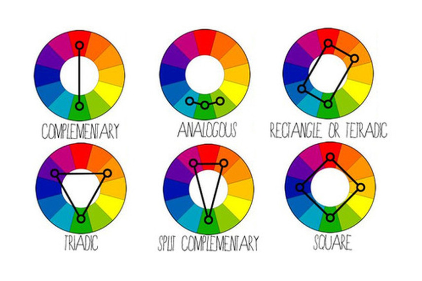
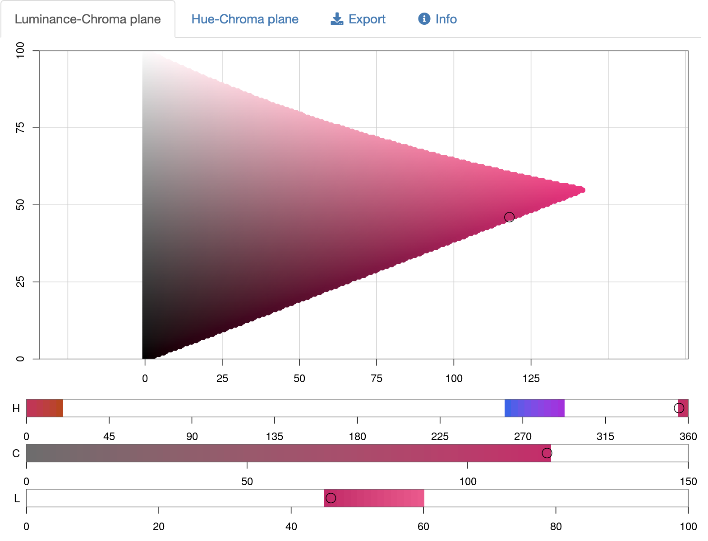
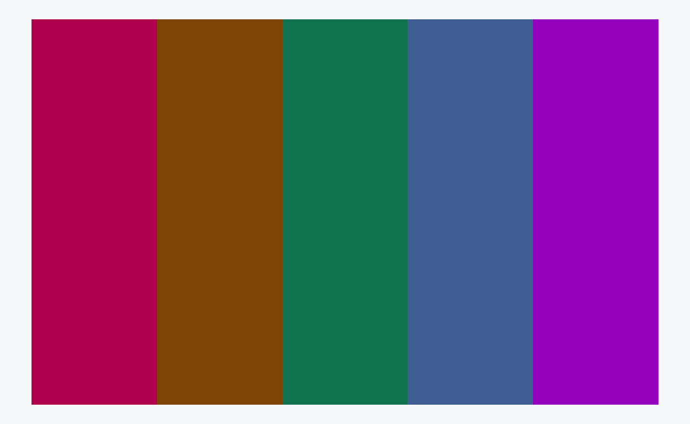

Custom Syntax Highlighting for {distill} Part 2
Creating the Palette
How to create an appealing and accessible colour palette for a syntax highlighting scheme
Since this post was originally written, I have replaced my {disill} website with this one built with Quarto.
The highlighting you’ll see below is not quite the same as it appeared on my previous site, because the default arrow theme is implemented differently in {distill} and Quarto.1 Moreover, I’m now using a very pale gray rather than white background, which necessitated a small shift in the green to achieve a sufficient colour contrast. And if you’re reading this in dark mode, it’s a whole different scheme again, though built on the same principles as described below.
I am keeping this post otherwise as was on the blog for posterity. Most of the content holds, regardless of how the site was built.
Part 1 recap and Part 2 overview
In Part 1 of this series, custom syntax highlighting for {distill}: modifying the theme, I describe how and why I went about the process of finding and modifying the default syntax highlighting for {distill} and how I created a function that wrapped that process for {distilltools}. I discuss the default syntax highlighting theme used on {distill} sites, and how we can modify it by replacing the five colours used there with five colours of our choosing.
I also outline the four criteria that were important to me as I went about choosing colours for my own syntax highlighting theme:
- It be based on the pink that I use in my logo and elsewhere throughout this site
- It uses colour theory to pick colours that look appealing together
- It meets WCAG web accessibility guidelines, by ensuring sufficient colour contrast, i.e. a ratio of 4.5:1, between each of the colours in the theme and this site’s background colour (white)
- The colours in the palette are colourblind-friendly, i.e. still distinguishable to people with various difference types of colourblindness.
This post spins out from Part 1 with a brief primer on colour theory and then a deep-dive into the processes, both thought and practical, of choosing colours for my palette that meet the above criteria. I show how I first went about this to derive the palette that’s implemented throughout this site. I also demonstrate a different, entirely R-based, approach to satisfying the criteria, which I decided to try out after learning more about different colour spaces as I was writing up this post. I much preferred the outcome of one approach to the other, but your mileage may vary.
A brief primer on colour theory
Colour harmonies

Colour theory determines which colours ‘look good’ together, based on their relative position on a colour wheel, such as that in Figure 1, somewhat analogously, I think, to how certain musical intervals sound more pleasing/harmonious than others, depending on the ratio of their frequencies. As shown in Figure 2, there are various different types of colour palettes that are in colour harmony, such as complementary (comprised of colours opposite each other on the wheel), analogous (three colours side by side) and triadic (three colours evenly spaced around the wheel). Note that all the colour schemes are derived from the same twelve colours, spaced evenly around a circle.

Colour spaces
RGB, HSB and HSL
Another aspect of colour theory relates to colour spaces, and different ways that colours can be defined. The best known, at least in the context of designing for the web, is RGB (Red Green Blue), which defines a colour by how much of each of those three primary colours it contains, in a range of 0-255. It is the hexidecimal representations of these three numbers that combine to make up the hex code for a colour.
More intuitive, however, for adjusting colours, is defining them by HSB (Hue, Saturation, Brightness), also known as HSV (Hue, Saturation, Value). HSB is a simple transformation of the RGB space. Similar to HSB is HSL (Hue, Saturation, Lightness), though HSL is considered an improved over HSB in terms of its perceptual qualities.
In HSB, the hue represents the colour type and is a number measured between 0 and 360°; it’s where you are on the colour wheel, ignoring how bright or intense the colour is. Saturation describes the intensity or richness of the hue, measured between 0 and 100%. 100% is the richest version of the colour and 0% is a shade of grey. Brightness measures, you guessed it, the brightness of the colour. Again, it ranges from 0 to 100%, with 0% being black and 100% being a very bright colour (here, black is not the opposite of white). Here’s an excellent article on the HSB system, which also explains how it differs from HSL. The differences between HSB and HSL are also illustrated in Figure 3.

It’s great to play around with an HSL or HSB colour wheel to get a sense of how harmonious colour schemes are built, and how the colours in them relate to each other on the wheel. I really like the canva colour wheel. It’s pretty simple, with only a few schemes, but it’s nicely designed and easy to use, and the page explains the basics of colour theory too. It’s a fun way to start building a palette. I like how you can pull the dots around the wheel and see how the colours relate, and if you click on a colour in the palette, there are HSL sliders too. Plus, as you move colours around, the background of the page changes colour, which is a nice touch!
HCL
Whilst websites on colour theory for designers tend to focus on either the HSB or HSL spaces, and it’s HSB or HSL wheels/sliders that tend to be built into design and colour software and apps, both spaces suffer from a lack of perceptual uniformity. The RGB rainbow palette is notorious for this. In general, RBG/HSB/HSL palettes are not a good choice for statistical graphics and data visualisation, where colour conveys meaning. For these purposes, the HCL colour space (Hue, Chroma, Luminance) offers a much better alternative. It is much more suitable for capturing human colour perception.
There is an R package for working with the HCL colour space, the intuitively named {colorspace} (Zeileis et al. 2020). It has many excellent vignettes, including one about the HCL space and its perceptual superiority over other colour spaces. The package also provides colour palettes and scales for {ggplot2}. There is also support for HCL palettes in base R. The HCL space is also used on I want hue, a site about colours aimed at data scientists, which allows you to generate and refine palettes of optimally distinct colours.

I haven’t seen the HCL space used elsewhere, at least not in the myriad of sites on colour theory for designers or colour/design apps than I use or have read when preparing my theme and this post. Perceptual uniformity is arguably more important in choosing colour palettes for data visualisation, where the colour conveys information about the data, than in picking a few colours that look good together for a syntax highlighting scheme.
Approach 1: ColorSlurp and HSB
Building a palette based on my pink, using colour theory
As I discuss in Part 1 of this series, I know that I need a palette of five colours to replace the five colours used in the default syntax highlighting scheme that comes with {distill}. The problem with all the colour schemes defined in Figure 2 is that they use a maximum of four colours. But not to worry! We know from colour theory that we can find 12 colours in harmony by taking evenly spaced colours around the HSL or HSB wheel, i.e. colours whose hues are 30° apart, given fixed values for saturation and brightness/lightness. Since we only need five colours, it’s sufficient to find the six colours that are 60° apart, and ignore one of them. Note that for five colours to appear harmonious, we have to respect these angles, not choose five colours that are 72° apart.
The main pink that I use in this site has hex #D4006A. I use a great little Mac app called ColorSlurp for building and assessing colour palettes. The basic version is free, though the pro version has great features for testing accessibility - more on that below. In ColorSlurp, I started a new palette with #D4006A as a starting point, then, making sure I was in HSB mode, found its HSB values are 330°, 100%, 83%. Leaving the S and B sliders where they are, the next colour I needed is 60° around the circle, i.e. at 30°, so I moved the H slider to that value and added the resulting orange to the palette. I then repeated that for 90°, 150°, 210° and 270°, giving me two shades of green, a blue and a purple. With a colour selected in ColorSlurp, you can also pull up the colour harmonies tab, , which gives quick access to some of these colours. As I only need five colours, I discarded one of the greens, keeping the one at 150°, which is complementary to the starting pink.
If you don’t use ColorSlurp or a similar app, there are many online options for building a palette in this way, for example http://colorizer.org (add a new color to the palette by clicking on the next square down to the right of the sliders). In both ColorSlurp and on colorizer.org, once you have defined a colour by its HSB values, you can read off the hex code, for ease of use in R.
At the end of this stage of the process, based purely on my pink and colour theory, my syntax highlighting palette now stood as in Figure 5. In the HSB space, these colours all have a saturation of 100% and a brightness of 83%.

Adapting for web accessibility
As noted in Part 1 of this series, one key feature of the default syntax highlighting scheme for {distill} is that it is optimised for accessibility and colour contrast. According to the Web Content Accessibility Guidelines, at the WCAG AA (minimum contrast) level, this requires that that contrast ratio between text and background colours be at least 4.5:1 for text of 14pt+ (which is the default text size for code in {distill}). The more stringent WCAG AAA (enhanced) level requires a ratio of at least 7:1.
The pro version of ColorSlurp includes a contrast checker, as in Figure 6, though there are many websites that also offer this. WebAIM (Web with Accessibility in Mind) has a very handy contrast checker which, like ColorSlurp, also includes sliders for adjusting the colours until the desired contrast is reached. Darkening a colour to improve contrast keeps the hue and saturation the same but reduces the brightness or lightness component (ColorSlurp uses HSB, WebAIM uses HSL).

The pink, blue and purple in the palette created above have a contrast ratio of better than 4.5:1 with the pure white background, but the orange and green do not.
My first thought was to keep the pink, blue and purple the same, and to just reduce the brightness of the orange and green until the contrast ratio was a bit better than required. In the HSB space, that gives the palette in Figure 7.

It’s not bad, but when I applied that palette as a syntax highlighting scheme, to my eye the pink, blue and purple looked a little too bright relative to the orange.
My next thought was to reduce the brightness on all the colours to the level of the least bright colour that passes the accessibility check (the green, at 53%). That gives the palette in Figure 8.

That looks way too dark for my liking. I don’t think it’s vibrant enough, and, although the colours all have good contrast against the white background, they don’t have much contrast with each other.
So, I settled on a compromise position. I reduced the brightness of the original pink, blue and purple from 83% to match the brightness of the accessibility-passing orange (71%), leaving only the green at a brightness of 53%, which it needs to pass the contrast check. This gives the palette in Figure 9. To my eye, the green doesn’t appear considerably more dark/less bright than the other four colours. If anything, the greens in Figure 5 and Figure 8 which both have uniform brighness, look a little too bright compared to the other colours. I guess this is a result of the lack of perceptual uniformity of the HSB space.

I’m happy with that, and that’s the syntax highlighting scheme I’ve adopted throughout this site, despite the fact that the palette now doesn’t actually include the pink that I set out to build my scheme around! However, because of the process I’ve followed, the pink that is in the palette does tone well with the brighter pink and I think my site still has a consistent look. In the end, it was more important that all the colours in the palette looked consistent together and met accessibility guidelines.
I am only just beginning to learn about web accessibility, and I know my site does not yet meet all best practices, but I’m committed to improving in this area. I first became aware of the issue of web accessibility because I follow Silvia Canelón on twitter and I highly recommend you do the same! The a11y project and WebAIM are great places to learn more.
Checking for colourblindness
Some visual impairments require a high colour contrast between text and background colour in order to be able to read content on the web. Another class of visual impairment worth paying attention to when designing palettes is that of colour blindness.
Nick Tierney has some excellent resources about colour and colourblindness and R packages for accessing these. These comprehensive slides cover what colour is and how we perceive it, colourblindness, how to check how palettes/plots appear to those with different types of colourblindness, the HCL space, the {colorspace} package and how to create your own palettes. He also has a short blog post on quickly assessing colour palettes to ensure they’re colourblind-friendly.
As recommended in the above posts, I used the {prismatic} package by Emil Hvitfeldt to check how my syntax highlighting palette appears to those with different types of colourblindness:
library(prismatic)
ek_highlight_colours <- c("#5B00B6", "#005BB6", "#008643", "#B65B00", "#B6005B")
check_color_blindness(ek_highlight_colours)
Thankfully, for all three main types of colourblindess, the five colours in the palette are distinguishable, so no further adjustments are necessary.
Approach 2: An R-based HCL alternative
The above sections describe the processes, both thought and practical, that I went through to derive the colour palette for my syntax highlighting scheme, and I’m happy with what I came up with. As I was deriving my scheme, I was working in ColorSlurp and only had a cursory knowledge of the differences between the HSB, HSL and HCL colour spaces.
However, as I was writing up this blog post, I become increasingly curious about alternative approaches I might have taken. In particular, could I have come up with a scheme that met my criteria entirely in R? Given the incredible ecosystem that R is, it should be no surprise that the answer turned out to be yes! So, below is this alternative approach, using the {colorspace}, {coloratio} and {prismatic} packages. Also, whereas the previous approach is based on the HSB colour space, this one uses HCL.
Building a palette based on my pink, using colour theory
The {colorspace} package uses the HCL color space, so the first task was to convert a hex code into its hue, chroma and luminance components, and make them available for future use, which can be done as follows:
library(colorspace)
pink <- hex2RGB("#D4006A", gamma = FALSE)
pink_hcl <- as(pink, "polarLUV")
pink_h <- pink_hcl@coords[1, "H"]
pink_c <- pink_hcl@coords[1, "C"]
pink_l <- pink_hcl@coords[1, "L"]The function from {colorspace} that is going to do the hard work of building a palette with differing hues but constant chroma and luminance (or as close as it can in HCL space) is qualitative_hcl(). By default, you give it the number of colours you want, and it works out equally spaced hues, starting at 0°. To override this default, you can give the h argument a start and end value, c(start, end). Again, I’m going to choose six colours, 60° apart, and discard one of them.2 The start value should be in [0, 60) and the end value should be in [300, 360). Let the hue of our starting pink be pink_h. Then all the colours in the palette are going to have a hue pink_h + 60 * k for some integer k. The following code picks the start and end values we need to pass to h:
seq_60 <- seq(from = -300, to = 300, by = 60)
pink_60 <- seq_60 + pink_h
pink_h_lower <- pink_60[which((pink_60 >= 0 & pink_60 < 60))]
pink_h_upper <- pink_60[which((pink_60 >= 300 & pink_60 < 360))]That’s most of the hard work. Now we build the palette:
hcl_six <- qualitative_hcl(
6,
h = c(pink_h_lower, pink_h_upper),
c = pink_c,
l = pink_l
) 
The only personal decision I make in this section is which of these six colours to discard. Removing the first of the greens gives me the palette in Figure 12.

Since publishing this post, Achim Zeileis, the author of the {colorspace} package, got in touch with me on twitter to offer a bit more insight into what’s going on with this palette. The hcl_six palette does not, as I originally stated, have constant chroma. I have corrected the text above. Not all combinations of Hue/Chroma/Luminance exist in HCL space. At the luminance of my pink (~46) not many other hues can have such high chroma (~118), as demonstrated in Figure 13.

qualitative_hcl() struggles in such circumstances, though does try to keep the luminance of the palette constant.
Adapting for web accessibility
When I was developing my scheme, I used my trusted ColorSlurp app to adjust colours to ensure they met WCAG standards of web accessibility. In writing up this post, I since learnt about web resources to do the same (e.g. WebAIM contrast checker) and now, for this section, I’ve discovered the {coloratio} by Matt Dray and {savonliquide} by Mohamed El Fodil Ihaddaden packages that can do this in R.
Both packages have much to recommend them. {savonliquide} has the advantage of being on CRAN, and provides a toolbox that allows the user to implement accessibility-related concepts, including, but not limited to, contrast checking. {coloratio} is GitHub only, and only for contrast checking, but it has some additional functionality in that area above {savonliquide}, such as quick plotting of the colours in contrast, and a function, cr_choose_bw() that chooses which of black or white has the better contrast ratio with a user supplied colour (which, incidentally, I use to automatically choose the text colour when highlighting words with different background colours, e.g. #D4006A vs #00D46A).3
Below, I use the cr_get_ratio function from coloratio to check the colour contrasts of each colour in the palette. Because it’s not vectorised, I use this in conjunction with map2_dbl from {purrr} to get all the contrasts at once.
If any of the contrasts are less than 4.5, I then call on the darken() function from {colorspace}, which adjusts each colour in the palette to make it, you guessed it, a bit darker, therefore improving the contrast ratio. I loop over these checking and darkening iterations until all colours in the palette have a contrast ratio of at least 4.5:1 compared to white. Here is the code that achieves this:
library(coloratio)
library(purrr)
palette <- hcl_six[c(6, 1, 3:5)]
contrasts <- map2_dbl(
palette,
"white",
~cr_get_ratio(.x, .y, quiet = TRUE)
)
min_contrast <- 4.5
any_too_light <- any(contrasts < min_contrast)
while (any_too_light) {
palette <- darken(palette, amount = 0.05)
contrasts <- map2_dbl(
palette,
"white",
~cr_get_ratio(.x, .y, quiet = TRUE)
)
any_too_light <- any(contrasts < min_contrast)
}At the end of the process, the palette looks like this:

Checking for colourblindness
As before, we use {prismatic} to check how the palette appears to those with various types of colourblindess. Whilst R can help us visualise this, we still need to use our judgement as to whether the output is acceptable. I believe, in Figure 15, it is.

But, do I like it?
Going through the process of building a colour palette that meets my criteria purely in R, in as automated, reproducible and adaptable way as possible has been a great learning experience for me, and hopefully something that will be useful to others. I don’t much like the palette it produced, though, especially in comparison to the one I came up with previously. Although the HCL-based palette probably has slightly better theoretical perceptual qualities, I prefer the vibrancy of the colours in the palette I came up with using my first approach, and that’s the one I’ve adopted on this site.
Back to Part 1
Now that I have chosen my colour palette, head back to Part 1 for details of how to modify the default {distill} syntax highlighting theme to incorporate them, and how to apply the custom theme to a {distill} site.
References
Footnotes
If you’d like to see the original theme in action, you can see it over at the distillery.↩︎
Again, I want to stress that this 60° apart approach and discard one is NOT something you should do when building a five-colour palette for a data visualisation. There, where the colours mean something in relation to the data, it’s important that the hues are evenly spaced. Even for qualitative data, the perceptual uniformity of five evenly-spaced colours is preferable. However, for a syntax highlighting scheme, where any of the colours can appear next to any of the others, and we want all pairs to look good together, and the colours convey no meaning, based on my current and still somewhat limited knowledge of colour theory, I think the six-at-sixty-degrees-discard-one approach is preferable (though I could probably be persuaded otherwise if anyone has a compelling case for an evenly-spaced 5 colours in this context too).↩︎
Since switching my website to Quarto, I have found out about the
best_contrastfunction from {prismatic} that I will use instead ofcr_choose_bwin future, since it allows us to specify the colours to contrast against, useful for me now that I am using very dark gray and very pale gray instead of black and white.↩︎